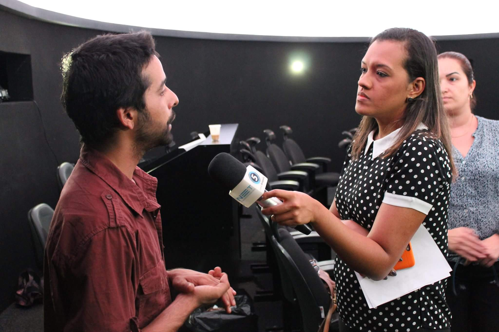
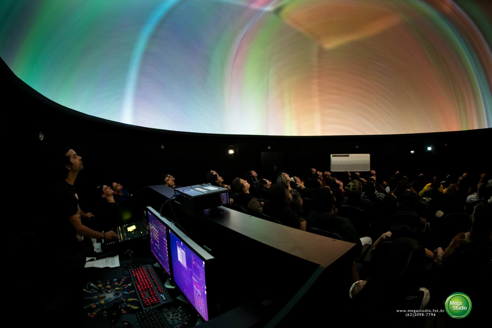
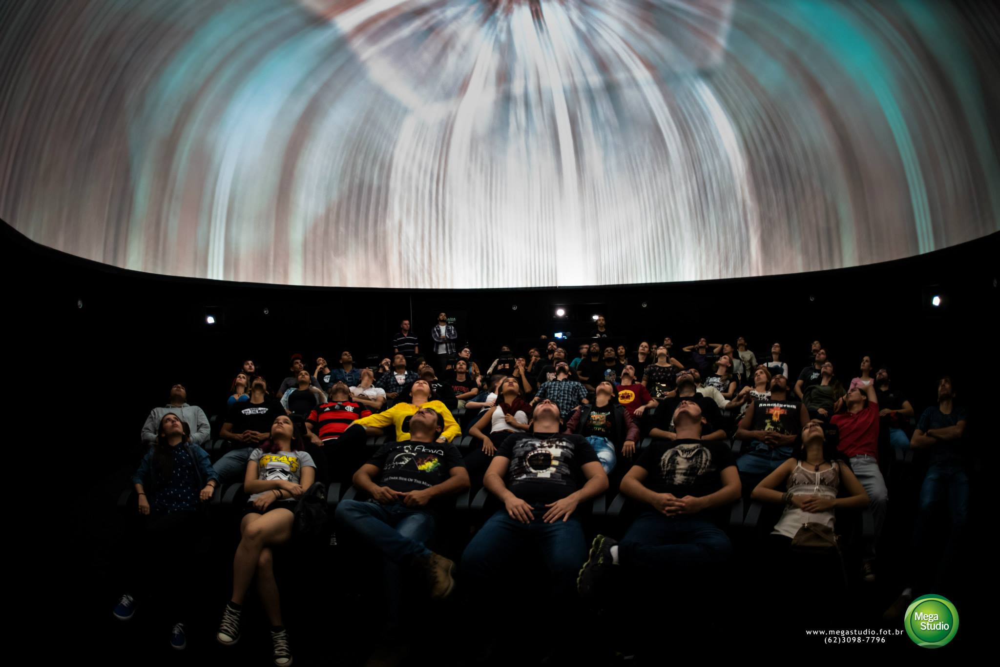

A pergunta
“Onde mora o som?” Relação entre espaço sideral, silêncio e escuta.
Modelo 3D · estudo de implantação
O modelo 3D apresenta a lógica espacial do projeto: disposição das caixas e subwoofers, circulação do público, eixo central, relação com o domo, cabos, suportes e adaptação a diferentes planetários.
conceito
Uma aventura para crianças e adultos descobrirem como o som viaja, gira e se transforma dentro do planetário.
Conceito
O Som no Espaço convida crianças e adultos a investigar uma pergunta simples e poderosa: como o som ocupa o espaço? No planetário, essa pergunta se transforma em aventura sensorial, unindo céu, escuta, corpo, imaginação e ciência.
A proposta convida o público a olhar para cima, escutar em volta, sair da tela pequena e entrar em uma experiência coletiva. O domo vira um céu compartilhado onde som, luz, planetas, estrelas e curiosidade científica se encontram.
Dois eixos
O projeto combina uma experiência familiar para planetários e museus com oficinas para estudantes universitários interessados em som espacial, Ambisonics, arte-ciência, audiovisual, astronomia e mediação cultural.
Sinopse
Uma aventura sonora inspirada na escuta de Pierre Schaeffer.
Dentro do planetário, uma criança escuta uma pergunta curiosa: se no espaço sideral o som não viaja pelo vazio, onde mora o som?
A partir dessa pergunta, o público é convidado a entrar em uma aventura sonora inspirada na história de Pierre Schaeffer, pesquisador, inventor e pioneiro da música concreta. Em vez de começar com notas musicais, instrumentos ou partituras, a narrativa começa com uma descoberta simples: qualquer som pode se transformar em música quando aprendemos a escutá-lo de outro jeito.
O espetáculo acompanha uma jornada poética pela escuta. Primeiro, ouvimos o mundo como ruído: passos, portas, motores, rodas, vozes, máquinas e pequenos acontecimentos do cotidiano. Aos poucos, esses sons se deslocam pelo domo, giram ao redor do público, aparecem atrás, atravessam o espaço e se transformam em matéria musical. O planetário se torna uma grande caixa de ressonância, onde a plateia percebe que escutar também é imaginar.
A história se aproxima do momento em que Schaeffer, trabalhando com rádio e gravação, percebeu que o som registrado podia ser recortado, repetido, acelerado, invertido e reorganizado. Um trem deixa de ser apenas um trem: vira ritmo. Uma máquina deixa de ser apenas máquina: vira textura. Uma voz deixa de ser apenas mensagem: vira timbre, gesto e movimento.
Em linguagem acessível para crianças, famílias e escolas, O Som no Espaço transforma a origem da música concreta em uma experiência sensorial. O público acompanha o nascimento de uma nova forma de escutar: não apenas ouvir para reconhecer a fonte do som, mas ouvir para descobrir suas cores, movimentos, formas e mistérios.
Ao final, a pergunta inicial retorna: se o som não viaja pelo vácuo do espaço, por que ele parece ocupar todo o planetário? A resposta aparece no corpo da própria plateia: o som precisa de ar, matéria e escuta. E, quando escutamos juntos, o espaço inteiro pode virar música.
“Onde mora o som?” Relação entre espaço sideral, silêncio e escuta.
Sons cotidianos aparecem como ruídos reconhecíveis: passos, portas, rodas, vozes, máquinas e pequenas ações.
Referência poética à descoberta de Schaeffer e aos sons ferroviários, mostrando que ruído também pode ter ritmo, timbre e forma.
Repetição, corte, reverso, velocidade, textura e espacialização transformam sons comuns em matéria musical.
O som circula pelo domo, aparece em diferentes direções e transforma a arquitetura em uma esfera de escuta.
Fechamento poético e educativo: som, matéria, ar, corpo, imaginação e escuta coletiva.
Espetáculo familiar
No foyer, perguntas, pequenas escutas e mediação preparam crianças e adultos para perceber que todo som tem corpo, espaço e direção.
Sons cotidianos se transformam em ritmo, textura e movimento, em uma experiência inspirada pela música concreta e pela escuta de Pierre Schaeffer.
Conversa ou atividade curta convida o público a reconhecer sons do cotidiano como matéria de imaginação, criação e descoberta científica.
Oficinas universitárias
As oficinas são um desdobramento formativo para estudantes de música, audiovisual, artes, tecnologia, educação, ciências, astronomia, museologia e áreas afins.
Astronomia e ciência
Planetários são espaços de divulgação científica, educação e imaginação. A proposta respeita essa vocação e parte de uma pergunta sobre som, matéria e espaço.
No espaço sideral, o som não viaja pelo vácuo como viaja no ar. Essa descoberta vira ponto de partida para a experiência: se o som precisa de matéria para se propagar, o planetário se torna um laboratório sensível para perceber ar, corpo, vibração, direção e imaginação.
Órbitas, planetas, estrelas, constelações simples e fases da Lua aparecem como linguagem visual e educativa.
A experiência aproxima crianças e adultos da ideia de propagação, vibração, ar, corpo e direção sonora.
O projeto usa a pergunta “como o som viaja?” para criar uma ponte entre escuta, astronomia, tecnologia e criação artística.
Som espacial / Ambisonics
Ambisonics é uma forma de organizar o som ao redor do público. Em vez de escutar apenas pela esquerda e pela direita, a criança pode perceber sons que giram, passam por cima, aparecem atrás ou se aproximam como se desenhassem caminhos dentro do domo.
Pequenas peças de som espacial poderão ser criadas por artistas convidados ou participantes, com repertório autoral ou autorizado e cuidado com direitos autorais.
Desenho espacial
O desenho espacial apoia orçamento, cabos, circulação, segurança, adaptação ao planetário e diálogo com equipes de operação, programação e montagem.
Convite a parceiros
O projeto está aberto a diálogos com planetários, museus, escolas, universidades, artistas, educadores, astrônomos, músicos, parceiros de acessibilidade e apoiadores culturais.
Sobre o proponente
As imagens registram uma trajetória prática em ambiente de planetário, com mediação pública, sessões especiais, bastidores técnicos e diálogo com comunicação científica.



Trajetória
Caio Rodrigues é artista, técnico de som e pesquisador de experiências imersivas. Atuou como planetarista em equipamento vinculado à Secretaria Municipal de Ciência e Tecnologia, acompanhando a finalização da construção de um planetário e conduzindo sessões para o público, especialmente estudantes da rede municipal de educação.
Sua trajetória reúne mediação científica, música, som ao vivo, produção audiovisual, arte digital e pesquisa em espacialização sonora. Em O Som no Espaço — uma aventura sonora no planetário, propõe aproximar crianças, famílias, educadores e estudantes universitários de uma escuta expandida, unindo planetário, Ambisonics, astronomia, imaginação e tecnologia livre.
As experiências anteriores em planetário, incluindo sessões especiais com música e som ao vivo, fundamentam a proposta de transformar o domo em um espaço de escuta, descoberta e criação artística.
Créditos técnicos
Crédito às ferramentas usadas na modelagem, organização do site e produção sonora do projeto.
Agradecemos também às ferramentas de inteligência artificial utilizadas como apoio no desenvolvimento textual, organização conceitual, prototipagem de código, documentação e planejamento visual do projeto.
Blender, Visual Studio Code, VS Code e REAPER são marcas, projetos ou ferramentas de seus respectivos titulares. Esta seção reconhece recursos utilizados no processo de criação, estudo, organização, prototipagem e documentação do projeto. A presença dos nomes e logos não implica parceria, patrocínio, certificação ou endosso oficial.
Área interna
Área interna de gestão
Etapas de desenvolvimento